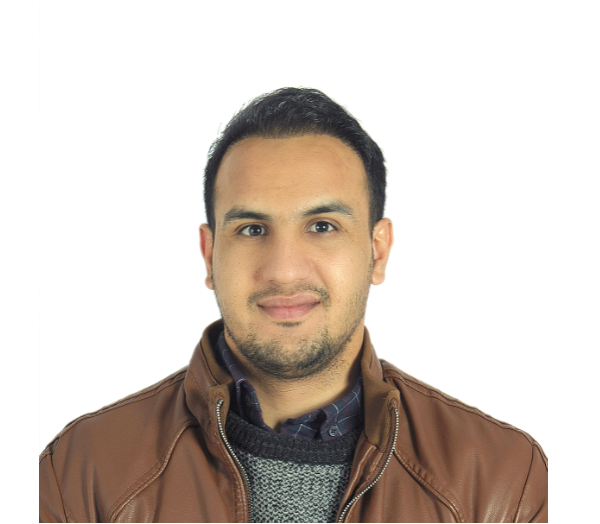
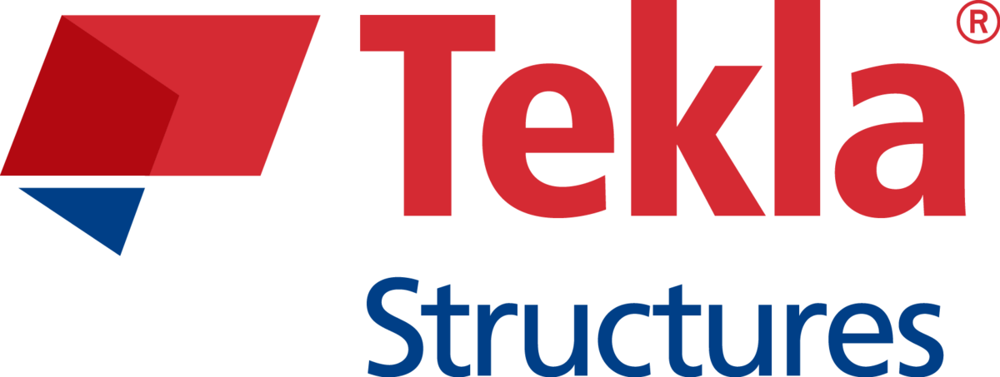

Summary
I am Mohammad Noman Nasery, i am recently working as a BIM-Manager in the City of Espoo in Finland. I am passionate about BIM who wants to take it to the next stage by using different programming languages.
Contact Information:
Click for contact Information
Education
I am holding two bachelor's degrees as follow
-
Geomatics Engineering (Ondokuz Mayis University)
-
Civil Engineering (Ondokuz Mayis University)
I am also holding two master's degrees which are as follow:
-
Digital Photogrammetry (Ondokuz Mayis University)
-
Computing in Construction (Metropolia University)
At the moment I am a Ph.D researcher in the Karadeniz teknik University.
Work Experience
I have 8 year of international work experience as follow:
-
experience in Turkey
-
Dynamica Engineering (3 years)
- Working as 3D-terrain modeler using photogrammetry
-
Drone Operator
-
BIM-Modeler (Using Tekla Structure)
-
Pixel Harita (1 month)
-
Working as 3D-terrain modeler using photogrammetry
-
Karadeniz Harita (2 months)
- Samsun Univeristy (4 months)
-
Working as assistant teacher in Civil Aviation Institue
Work experinece in Finland
-
Sunwall Houses Oy (1 year)
-
Working as BIM strategy developer
-
Working as tender calculator using BIM technology
-
Working as Steel designer
-
Ramboll Finland Oy (2 years)
-
Working as BIM-Coordinator
-
Working as BIM-project Manager
-
Working as Development manager
- Working as Cintoo Cloud admain user
-
Espoo City (1.5 Years)-Continue
-
Working as BIM Manager
- Working as AutoCAD admin user
-
Working as BIM strategy developer
-
Working as BIM instructor
-
Working as Client in all projects of City of Espoo
Skills
I have different skills in different fields which are as follow
-
Software Skills
-
Solibri Office
-
Autodesk Revit
-
Tekla Structures 
-
Autodesk NavisWorks
-
Language skills
-
English
-
Finnish
-
Turkish
-
Pashto (native)
- Persion
-
Hindi
-
Urdu
-
Uzbek
Hobbies
Click for hobbies